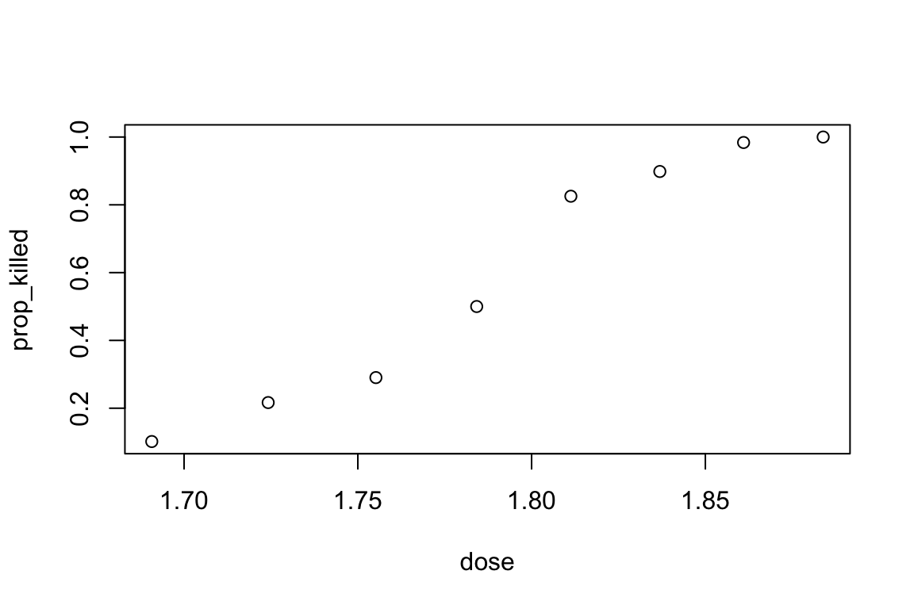
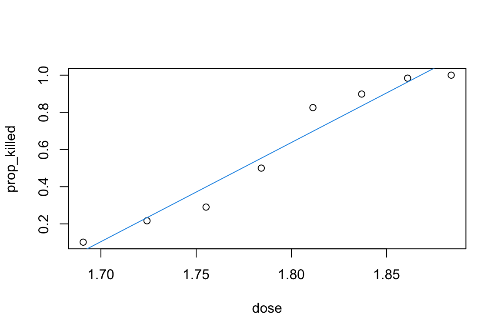
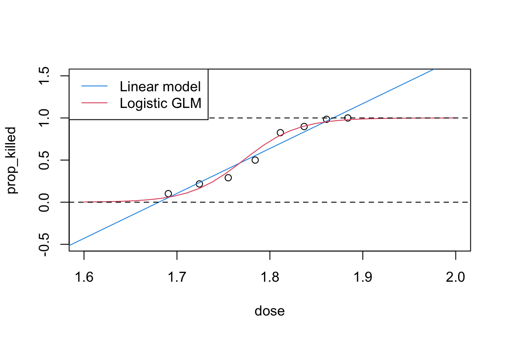

This dataset represents the number of beetles exposed (exposed) and number killed (killed) in eight groups exposed to different doses (dose) of a particular insecticide. We are interested in how the proportion of beetles killed is related to dose.
To do so, We could add a column to the dataset for the proportion of beetles killed in each of the eight groups.
# Add a column for the proportion of beetles killed.beetle$prop_killed <- beetle$killed / beetle$exposed
Plot prop_killed against dose.
plot(prop_killed ~ dose, data = beetle)

We might naively think about using a linear model to model the dependence of prop_killed on dose.
# Fit a linear model of prop_killed on dosebeetle_lm <-lm(prop_killed ~ dose , data = beetle, weights = exposed)
We use weights = exposed to weight the response for each group by the number of beetles in that group. Do you think this linear model is appropriate here?
You can add a fitted regression line to your plot of prop_killed against dose with
plot(prop_killed ~ dose, data = beetle)abline(beetle_lm, col =4)

Does the fitted regression line look reasonable here? What is the predicted proportion of beetles who would be killed in a new group given dose = 2? Do you think this a good prediction?
Fitting a logistic regression model
A better model might be to model the number of beetles killed in each group as a binomial random variable with probability of death depending on dose. Let \(p_i\) denote the probability of death in the \(i\)-th group, \(i=1, \cdots, 8.\)
A logistic regression model is \[
Y_i | n_i, p_i \sim \text{Binomial}(n_i,p_i),\quad
\text{logit}(p_i) \equiv
\log\left({{p_i}\over{1-p_i}}\right)=\beta_1+\beta_2 x_i, \quad i=1,\ldots ,8,
\] where \(Y_i\) is the number of beetles killed, \(n_i\) is the number of beetles exposed and \(x_i\) is the dose, for the \(i\)-th row of the dataset.
This is a generalised linear model with a binomial distribution for the response and logistic link function.
The quantity \(p_i/(1-p_i)\) is called the odds of the event whose probability is \(p_i\); in this case, the odds of death. The interpretation of the above model is that the logarithm of the odds of death is linear in \(x\) (the explanatory variable dose).
Fitting generalised linear models in R is very similar to fitting linear models. You replace the command lm with the command glm. The distribution and link function which you require for your model is specified by the argument family, which is supplied to the model. For example family = binomial(link = "logit") fits a generalised linear model with binomial distribution and logistic link. In fact family = binomial, does the same, as the default is the canonical link. The form of the linear predictor is specified in the model formula for glm in the same way as for lm.
There are several ways to fit a logistic regression model in R. One method, following our approach with linear models, is to let the response in the formula be the proportion of “successes” (proportion of beetles killed, prop_killed), and weight by the number of trials (number of beetles in the group, exposed).
# Fit a logistic regression model, using prop_killed as response.beetle_glm <-glm(prop_killed ~ dose, data = beetle, family = binomial, weights = exposed)
Another method is to write the response as a matrix with two columns, with first column the number of “successes” (the number of beetles killed, killed), and second column the number of “failures” (the number of beetles not killed, exposed - killed). We do not need to add weights with this approach.
# Fit a logistic regression model, with a two-column matrix, with columns (number of successes, and number of failures) as the response.beetle_glm_2 <-glm(cbind(killed, exposed - killed) ~ dose, data = beetle, family = binomial)
The result of the glm command is a generalised linear model object which can be used within many of the same R commands as a linear model object. Some useful ones are resid, coef, deviance, fitted, summary, update and anova.
Interpreting the output
As with linear models, we can get parameter estimates and standard errors, and conduct simple hypothesis tests, by using the summary command
# Summarise the fitted logistic regression.# `dose` is highly significant.summary(beetle_glm)
Call:
glm(formula = prop_killed ~ dose, family = binomial, data = beetle,
weights = exposed)
Coefficients:
Estimate Std. Error z value Pr(>|z|)
(Intercept) -60.717 5.181 -11.72 <2e-16 ***
dose 34.270 2.912 11.77 <2e-16 ***
---
Signif. codes: 0 '***' 0.001 '**' 0.01 '*' 0.05 '.' 0.1 ' ' 1
(Dispersion parameter for binomial family taken to be 1)
Null deviance: 284.202 on 7 degrees of freedom
Residual deviance: 11.232 on 6 degrees of freedom
AIC: 41.43
Number of Fisher Scoring iterations: 4
The Coefficients section gives the maximum likelihood estimates of the parameters, together with their standard errors. The column z value is a statistic for testing the hypothesis that the corresponding parameter is equal to zero, which should be compared with a standard normal distribution. The Pr(>|z|) column gives a \(p\)-value for this hypothesis test.
Use the summary command to check that the model beetle_glm_2 is equivalent to model beetle_glm.
Our fitted model is that \[
\log \left( \frac{ p(x_i)}{1-p(x_i)} \right)
= \beta_1 + \beta_2 \, x_i = -60.72 + 34.27 x_i
\] The MLE of \(\beta_2\) is \(\hat{\beta_2} = 34.27\) with SE (asymptotic standard error) \(2.912\). From this, we can test \(H_0: \beta_2 =0\) by noting that, under \(H_0\), approximately \(\hat{\beta_2}/\text{SE} \sim \text{Normal}(0, 1)\). So we will reject \(H_0\) if \(|z| = |\hat{\beta_2}/\text{SE}| > 1.96\). In this case, \(z = 11.77\), so we reject \(H_0\) at \(5\%\) significance level. In fact, we would reject \(H_0\) at any reasonable significance level; from the summary we see the \(p\)-value for this test is \(<2 \times 10^{-16}\).
We further interpret the estimate as follows. We first examine the model for two values of dose \(x\): \(x_1\) and \(x_2\). \[\begin{align*}
\log \left( \frac{ p(x_2)}{1-p(x_2)} \right) &= \beta_1 + \beta_2 \, x_2 \\
&= \beta_1 + \beta_2 \, x_1 + \beta_2 (x_2 - x_1) \\
&= \log \left( \frac{ p(x_1)}{1-p(x_1)} \right) + \beta_2 (x_2 - x_1).
\end{align*}\] By exponentiating both sides, \[
\frac{p(x_2)}{1-p(x_2)} = \frac{ p(x_1)}{1-p(x_1) } \cdot \exp\{\beta_2 (x_2 - x_1)\}.
\]
If we have \(x_2 - x_1 = 1\), so \(x_1 = x_2 - 1\), we find that \[\begin{align*}
\frac{p(x_2)}{1-p(x_2)} &= \frac{ p(x_1)}{1-p(x_1) } \, e^{ \beta_2} \\
\text{Odds of death for $x_2$} &= \text{Odds of death for $(x_2-1)$} \times e^{\beta_2}.
\end{align*}\] The odds of death gets multiplied by \(\exp(\beta_2)\) for each unit increase in \(x\).
Returning to our example, for a unit increase in \(x\) (dose), the estimated odds of death of a beetle are multiplied by exp(34.27). For example, consider two beetles with \(x= 1.7\) and \(1.8\) respectively.
We estimate that the odds of death of the second beetle is exp(34.27 * 0.1) = 30.8 times the odds of death for the first beetle.
Making predictions
We can make predictions for new doses by using predict.
# Make predictions at `dose = 1.7` and `1.8`# By default, in `predict`, type = "link", which means we predict `logit(p)`newdata <-data.frame(dose =c(1.7, 1.8))predict(beetle_glm, newdata = newdata)
1 2
-2.4579008 0.9691318
Are these predictions what you expected? Can you see what is being predicted here? You can check the help on this predict method with
?predict.glm
The default for the type argument is type = "link", which means these values are predictions of \(\text{logit}(p(x))\), for each of the new doses. If we need the predicted probability of death \(p(x)\), we use type = "response" instead.
# To predict probabilities `p`, use `type = "response"`predict(beetle_glm, newdata = newdata, type ="response")
1 2
0.07886269 0.72494641
What is the predicted probability of death at dose = 2? How does this compare with the prediction you found earlier with the linear model?
We can add a curve of the predicted probabilities from the logistic regression model to our plot of prop_killed against dose, alongside the fitted regression line from the linear model.
# Add fitted regression curves from linear model and logistic GLM to a scatterplot of `prop_killed` against `dose`:newdata <-data.frame(dose =seq(1.6, 2, length =30))plot(prop_killed ~ dose, data = beetle, ylim =c(-0.5, 1.5), xlim =c(1.6, 2))abline(beetle_lm, col =4)lines(newdata$dose, predict(beetle_glm, newdata = newdata, type ="response"), col =2)abline(h =c(0,1), lty =2)legend("topleft", c("Linear model", "Logistic GLM"), lty =1, col =c(4, 2))

Make sure that you understand what all of these commands are doing. Which of the models do you prefer after looking at these fitted regression curves?